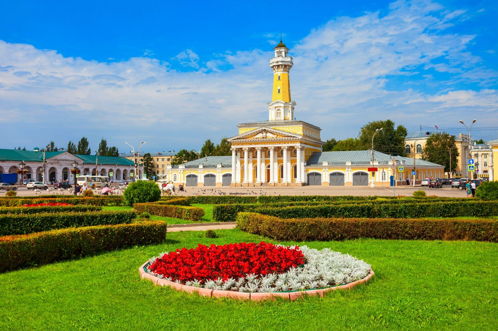
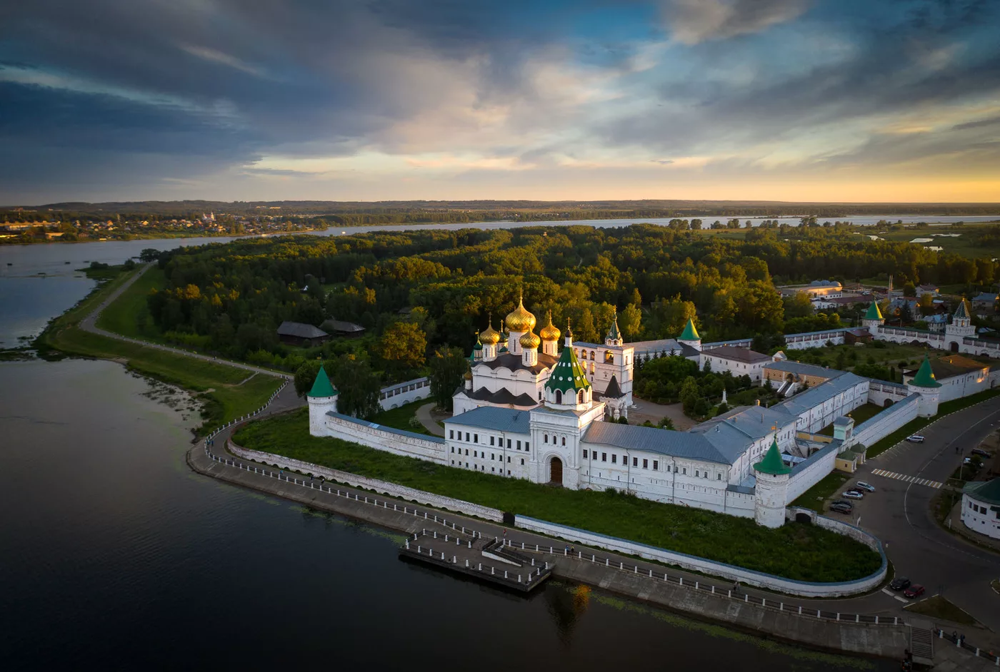
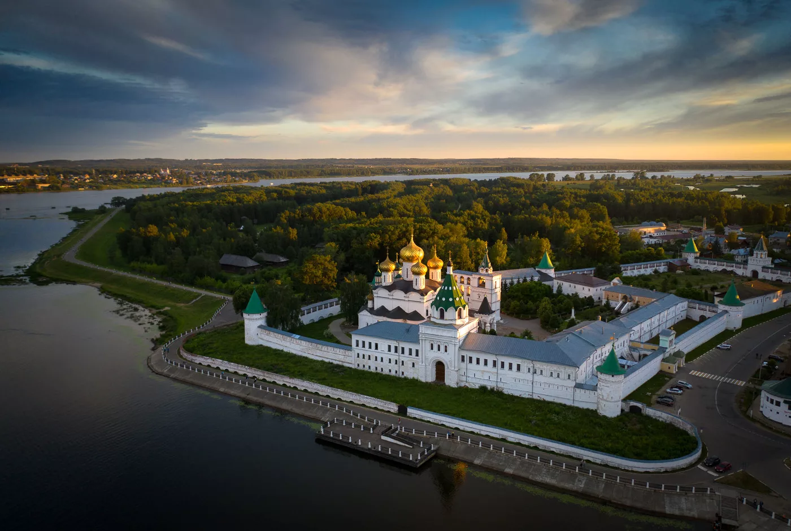
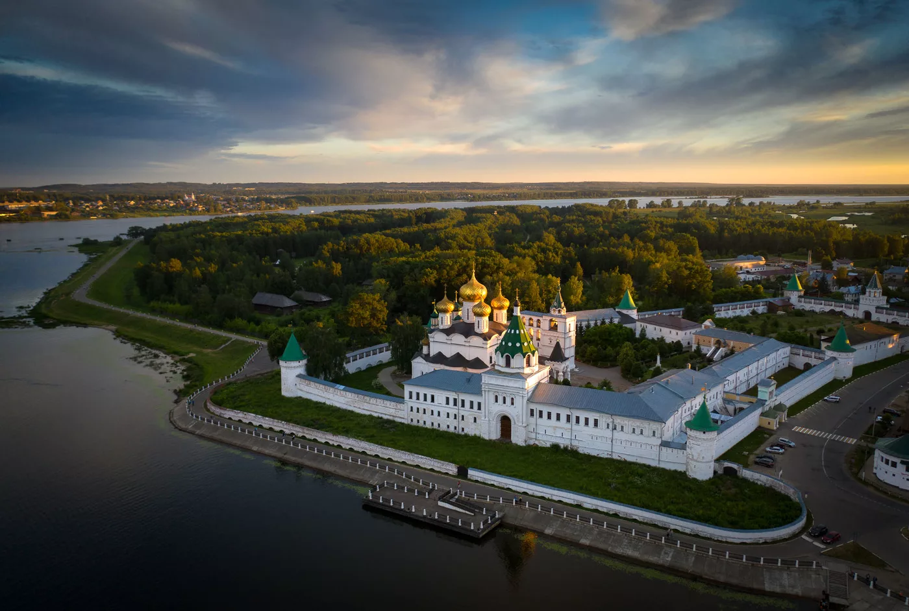
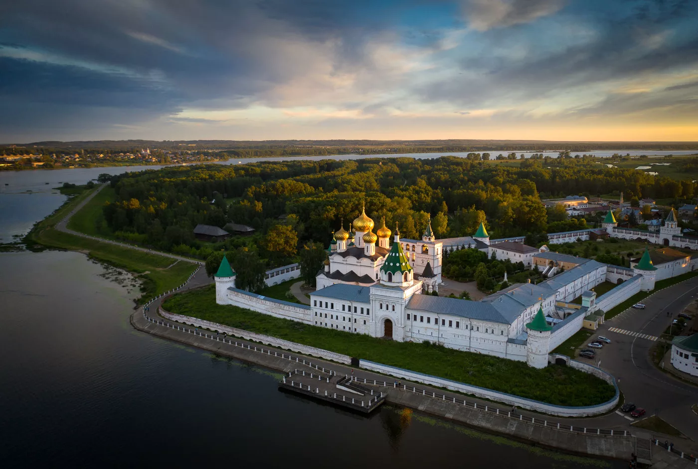

 




Кострома́ — город в России на реке Волге, основанный Юрием Долгоруким в 1152 году. Административный центр Костромской области, речной порт. Население — 265 761 человек (1 января 2024). Площадь города составляет 144,5 км². Расположен в 302 км от Москвы, в 344 км от неё же по автомобильной дороге. Кострома основана в XII веке, а в XIII веке стала центром удельного княжества. Исторический центр города в основном сохранил образцовый в своём роде ансамбль эпохи классицизма конца XVIII—XIX веков. Из памятников допетровской эпохи наиболее интересны комплексы Ипатьевского и Богоявленско-Анастасииного монастырей. Город входит в список поселений, имеющих официальный статус «исторических». Входит в «Золотое кольцо России», в список городов которого Кострому лично включил Бычков Юрий Александрович, придумавший этот туристический маршрут в 1960-е годы. Город включён в Перечень исторических городов России. Указом Президента Российской Федерации от 10 сентября 2021 года городу было присвоено звание «Город трудовой доблести».
Некоторые достопримечательности Костромы: